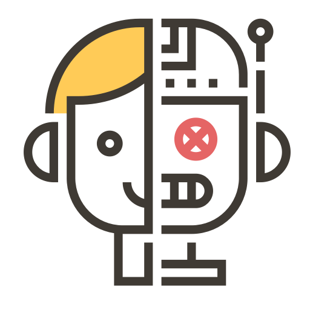

<!--
  Generated template for the LoginPage page.

  See http://ionicframework.com/docs/components/#navigation for more info on
  Ionic pages and navigation.
-->
<ion-header>

  <ion-toolbar color="primary">
    <ion-title>Login</ion-title>
    <ion-buttons start>
      <button ion-button (click)="Cancelar()">
        <span color="primary">Cancelar</span>
      </button>
    </ion-buttons>
  </ion-toolbar>
</ion-header>


<ion-content padding>

  
  <ion-list>
    <ion-item>
      <ion-label floating>Correo institucional</ion-label>
      <ion-input type="text" [(ngModel)]="user.email"></ion-input>
    </ion-item>

    <ion-item>
      <ion-label floating>Contraseña</ion-label>
      <ion-input type="password" [(ngModel)]="user.password"></ion-input>
    </ion-item>
    <br />
    
    <ion-item>
      <div class="row responsive-sm">
        <div class="col col-25">
          <button ion-button block outline round icon-end color="primary" (click)="Login(user)" style="font-weight: bold">Ingresar
            <ion-icon name="md-arrow-dropright-circle"></ion-icon>
          </button>
        </div>

        <div class="col">
          <button ion-button block outline round icon-end color="primary" (click)="Register()" style="font-weight: bold">Registrar
            <ion-icon name="md-arrow-dropright-circle"></ion-icon>
          </button>
        </div>
      </div>

      <div class="row responsive-sm">
        <div class="col">
          <button ion-button block outline round icon-end color="primary" (click)="LoginFacebook()">Facebook
            <ion-icon name="logo-facebook"></ion-icon>
          </button>
        </div>

        <div class="col">
          <button ion-button block outline round icon-end color="danger" (click)="LoginGoogle()">Google
            <ion-icon name="logo-google"></ion-icon>
          </button>
        </div>

      </div>
    </ion-item>
  </ion-list>


</ion-content>